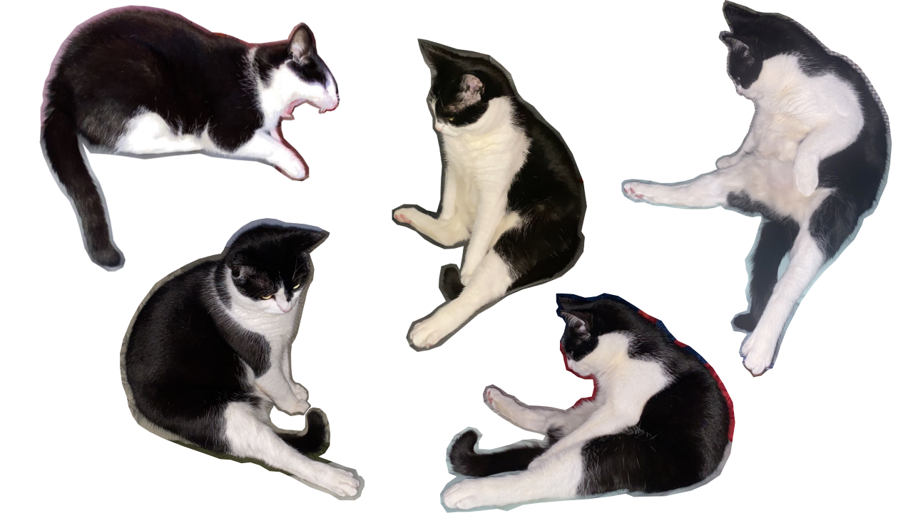

I am currently senior at Bridgewater State University studying Computer Science and Biology. I was initially a biology major in pursuit of a career as a physician assistant, but during my junior year, I decided to add the computer science major. I always had an interest in coding but did not invest in it until I found myself working with many different programs and saw glimpses of code in biology coursework. I realized that, although these two majors may seem unrelated at first glance, computer science knowledge could only benefit me in my biological career. Now, I aim to pursue a career in software engineering and biotechnology.
